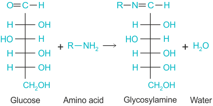
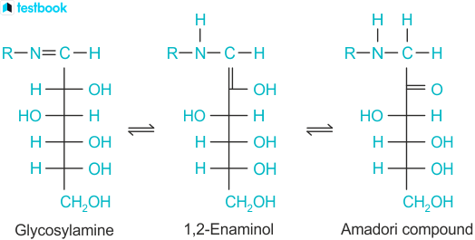

Maillard reaction: brown butter
Learn about the maillard reaction by making brown butter chocoalte chip cookies!
What is the maillard reaction?
The Maillard reaction is a series of non-enzymatic browning reactions
between amino acids and reducing sugars. The reaction typically occurs
under low moisture conditions at temperatures above 284°F(140°C), and is
what gives browned foods their distinctive nutty flavor and dark color.
Higher pH increases rate of Maillard reaction, adding a small amount of baking soda can enhance and speed up the reaction.
the chemistry can be broken down into three main steps:
Step 1.
Through a condensation reaction, the carbonyl group of the sugar joins
with amino group of the amino acid to form N-substituted
glycosylamine(Schiff Base).

Step 2.
The unstable glycosylamine undergoes Amadori rearrangement into a stable
ketoamine known as an Amadori compound (for aldoses) or Heyns compound
(for ketoses).

Step 3. The amadori compound leads to multiple degradation pathways where it reacts to form several products such as:
- Reductones and water molecules
- Diacetyl, pyruvaldehyde, aspirin, and other dhort-chain hydrolytic fission products
- Melanoidins and brown nitrogenous polymers
Brown Butter
Brown butter (or beurre noisette in French) is an example of the Maillard reaction, but it’s also influenced by a bit of caramelization and thermal degradation of milk solids. Brown butter is made by gently heating butter, which contains:
- ~80% milk fat (triglycerides)
- ~15–17% water
- ~1–2% milk solids (proteins, sugars, salts)
How to make brown butter
- --Heat butter in pot on low to medium heat. After a few minutes, water will evaporate off the milk proteins which will start to brown.
- --Scrape the bottom of the pan to prevent the browning milk proteins from sticking.
- --When desired color is achieved pour the butter mixture into a heatproof bowl and stir it for one or two minutes to cool it down. Do not leave the butter in the pan since it will continue to cook and burn.
Brown butter chocolate chip cookies
You can see, taste, and smell the effects of the maillard reaction on butter by making brown butter chocolate chip cookies! Using the steps above, make some brown butter and substitute it into your favorite cookie recipe. For every 1/2 cup (8 tablespoons) of regular butter, add 1 tablespoon of liquid (like water, milk, or another liquid from the recipe) when using brown butter to make up for the water that evaporated.add some images from experiment
if you compare normal cookies with brown butter cookies, the brown butter ones will be noticably darker, richer, and nuttier. the enhanced flavor of brown butter makes it a desirbale ingredient in many foods beyond just cookies. It can be used in savory foods such as vegetables, pasta, fish, and chicken. Brown butter is also a critical component in pastries and other baked goods such as tart tatin, brownies, cakes, and pancakes.